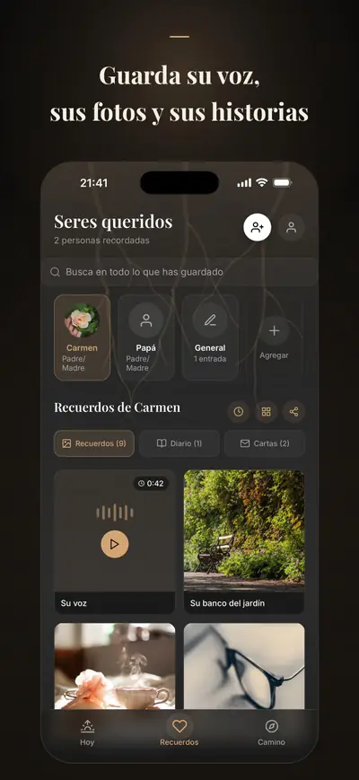
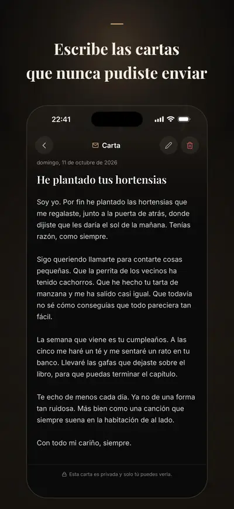
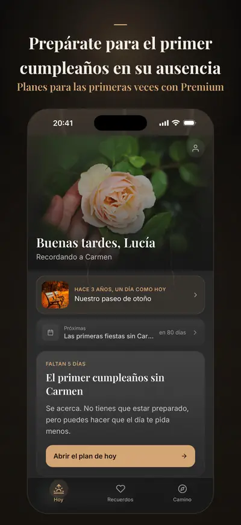

Solace Tree: Duelo y recuerdos
Diario y cartas a quien se fue
Solace Tree es un diario para atravesar el duelo por quien has perdido: guarda sus fotos y su voz, escríbele las cartas que no llegaste a enviar y prepárate para las fechas que duelen.
Para iPhone. Empezar es gratis; Premium es opcional.



Premium añade planes para las fiestas y las primeras veces en las fechas que eliges, un libro homenaje y una copia cifrada en la UE que vuelve a un iPhone nuevo.
Pensado para los meses tras una pérdida, cuando todos esperan que ya estés mejor y no lo estás. Recuerdos, cartas guiadas, diario, su cumpleaños y el aniversario de su muerte, registro diario, respiración y apoyo en crisis siguen siendo gratis. Nada te mete prisa ni lleva la cuenta, y nada se comparte si tú no quieres.
GUARDA SUS RECUERDOS
- Fotos, vídeos y grabaciones de voz, con las historias que hay detrás
- Una línea de tiempo de recuerdos para cada persona a la que recuerdas
ESCRÍBELE
- Cartas guiadas y, con Premium, caminos de cartas más hondos: lo que no pudiste decirle, lo que quieres agradecerle, lo que te llevas contigo
- Propuestas de reflexión suaves para los días en que no salen las palabras
- Un diario privado para todo lo demás
PREPÁRATE PARA LAS FECHAS DIFÍCILES
- Su cumpleaños y el aniversario de su muerte; con Premium, el Día de la Madre o del Padre, Todos los Santos y las primeras Navidades sin esa persona, en las fechas que eliges
- Pequeños rituales en los que apoyarte: una respiración, un recuerdo, un momento de calma; con Premium, una carta, una visita o una vela
- Recordatorios suaves unos días antes de cada fecha
CONVIERTE SUS RECUERDOS EN ALGO QUE GUARDAR (PREMIUM O PACK DE RECUERDOS)
- Un libro homenaje, una línea de tiempo de recuerdos o tarjetas de recuerdo, listos para imprimir o conservar
PARA LOS MOMENTOS MÁS DUROS
- Un registro diario breve, sin puntuaciones y sin juicios
- Ejercicios de respiración y de arraigo para cuando el duelo se instala en el cuerpo
- Un programa guiado de 30 días para las primeras semanas tras una pérdida
- Consuelo desde las tradiciones de fe, si forman parte de tu vida
- Línea de crisis o emergencias a un toque, para cuando necesites más de lo que puede darte una app
TU PRIVACIDAD, PRIMERO
Tus recuerdos y lo que escribes se guardan en tu iPhone, y tus registros diarios, tus estados de ánimo y la fe que eliges nunca salen de él, ni siquiera con Premium. No hay anuncios ni rastreo. Con Premium, se guarda una copia en la nube en la UE, cifrada; si continúas con Apple en Perfil, vuelve a un iPhone nuevo si pierdes el tuyo.
PREMIUM
Premium añade:
- Planes para más fechas difíciles: fiestas, primeras veces y fechas propias
- Rituales de carta, de visita y de vela
- Caminos de escritura más hondos, con más plantillas de carta y propuestas de reflexión
- Seres queridos, recuerdos y entradas de diario sin límite
- Exportaciones de recuerdos: libros homenaje y líneas de tiempo
- Copia de seguridad y sincronización en la nube, con 250 MB para fotos, vídeos y grabaciones de voz
Solace Tree es un acompañante y no sustituye el apoyo profesional. Líneas de crisis y números de emergencia por país
Disponible en español, inglés, turco, alemán, francés y árabe.